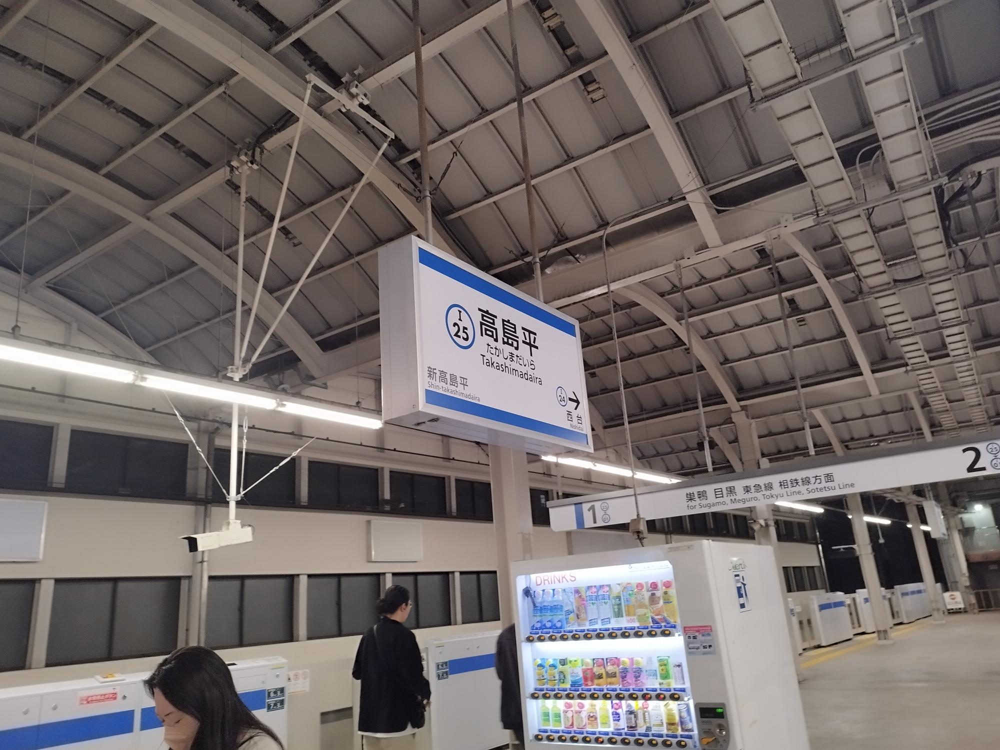

- 現状や課題に関する情報収集
- 小規模劇団に取材して劇団の抱える悩みを知る
5/3に取材した 協力：劇団バルスキッチン様（東京都板橋区高島平）

- 他メンバー：坂本さん
- 劇団と顧客の関連性
- 細く長く楽しんでくれる顧客へのアプローチ＞単純な客足
- 演劇好きのコミュニティの重要性
- ブランディング＝高級 より 身近さ
- コスト面の問題克服：人材・運営効率
- 顧客のニーズ：もの（思い出）に残ったほうがいい
※SNS・広報問題は顧客側にもニーズ聞く必要あり
- チケットの販売プラットフォーム（中小・物語に特化）
解決課題：拡散に関しての投資の余裕がない、人材不足
物語：動員の固定 → 作品がいい＝購買につながる
-
アンケレシート：劇団と顧客の関連性、思い出、コスト削減
スマホにタッチしてデータを取り出すツール→NFCタグ 商品リンク
- 舞台装置の件（ただものを作る× →舞台装置のプラットフォームならあり？）：人材不足、効率
- 撮影スポット？
- 観客が舞台の感想や考察をまとめておいて、それを呼び出して思い出として見られるツール（アプリ？）：詳細は＜こちら＞
前のページに戻る